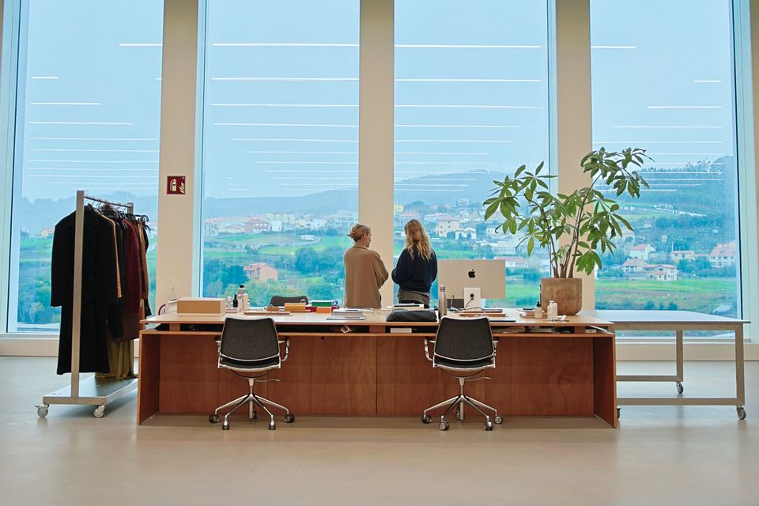

Multinacionales de pueblo: los pequeños municipios que ganaron la lotería con Zara, Ikea, Lego o Adidas

Muchos gigantes empresariales europeos tienen su sede en localidades de menos de 50.000 habitantes, para las que son una gran fuente de ingresos y empleo, pero también de dependencia económica
Resulta difícil pasear por Arteixo sin tropezar con el complejo empresarial del grupo Inditex : más de 500.000 metros cuadrados de edificios acristalados y ocho fábricas que se imponen sobre todo lo demás. Un reflejo de la pujanza de la primera multinacional española, que, a pesar de su gran crecimiento, sigue teniendo su sede corporativa desde 1976 en este municipio y su polígono de Sabón, a menos de 20 kilómetros de A Coruña. Desde entonces, la localidad ha visto cómo su vida se transformaba radicalmente y cómo su población se triplicaba (frente a un crecimiento capitalino del 20% y provincial del 7%). En las instalaciones gallegas de la empresa fundada por Amancio Ortega trabajan 5.500…